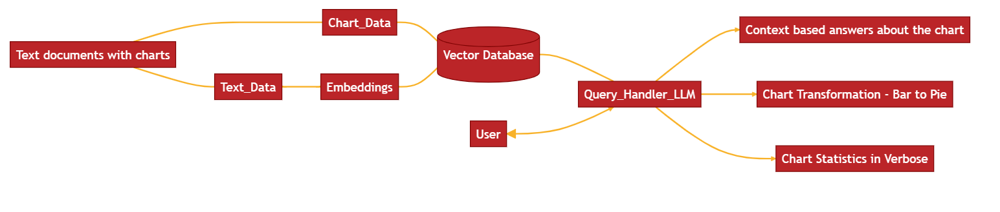

CS573 - Data Visualization Group Project - Spring 2024
Leveraging AI and Vector Databases for User-Driven Document Analysis and Interactive Chart Transformations
Utilizing large language models and query techniques with vector databases,
this project offers a dynamic interface where users can interactively
query and customize text and charts from uploaded documents,
ensuring authoritative insights are directly derived and enhanced from the document's own data.

Our Team
Bijesh Shrestha is pursuing a PhD in Data Science focusing on Visualization research. He was an Army ROTC cadet at the University of Alaska Anchorage and native of Malangawa, Nepal.
Andrew Kerekon is enrolled in a BS/MS in Computer Science at Worcester Polytechnic Institute (WPI) with a passion for combining technology, biology, and mathematics to address real-world problems.
Skilled in backend and frontend development, with particular interest in Java and React programming.
Love for volunteerism and community service, and serve as Drupal web editor for Friends of Institute Park in Worcester, MA.
Aviv Nur is pursuing a Master of Science in Data Science at Worcester Polytechnic Institute (WPI),
where he is learning advanced techniques and tools for data analysis, visualization, and modeling.
His goal is to enhance his knowledge and competencies in data science, and to apply them to solve real-world problems in the field of statistics.
He is passionate about using data to inform decision-making, support policy-making, and improve social welfare.
He is eager to collaborate with other data professionals, researchers, and stakeholders, and to leverage his statistics expertise and experience.
Motivation
The importance of efficiently extracting and interpreting information from documents featuring diverse chart types cannot be overstated, given the complex nature of these tasks and their dependency on a reader's prior knowledge and proficiency. Recognizing the challenges inherent in chart question and answer (CQA) systems, which must effectively synthesize textual and visual data to yield comprehensive insights, our project seeks to significantly advance this field.
Motivated by the ongoing research in this area and building upon existing studies that have explored the integration of Large Language Models (LLMs) and data synthesis techniques, our project introduces innovative methodologies for interacting with and extracting data from various chart formats, including SVGs embedded in PDFs and images uploaded by users. Despite the progress detailed in recent literature, current systems often fall short in terms of reliability, especially when relying on the generalized knowledge provided by LLMs.
Our project addresses these deficiencies by implementing a robust framework that combines a vector store database with advanced embedding techniques for semantic search, thereby enhancing the reliability and accuracy of the data retrieved. This integration not only improves the system's performance but also ensures that it can operate at scale, a crucial factor given the diverse and voluminous nature of chart data.
In summary, our contributions are aimed at refining the interaction between users and document-based chart data through sophisticated transformations and user-agent interfaces, enabling more precise and insightful analyses. This approach not only bridges the current gaps identified in the literature but also sets a new standard for reliability and functionality in CQA systems.
Background
Extracting and interpreting information from documents containing various charts often demands considerable time and
relies significantly on a reader's prior knowledge and background.
The state-of-the-art paper by [1] highlights the critical need for chart questions and answer (CQA) systems capable of synthesizing text
and visuals for comprehensive insights, and provides problem space as shown in Figure 1.

Figure 1: Chart Question Answering - State of the art and Future Directions [1].
Various research is being done that attempts to fill this gap through the integration of LLM and techniques to synthesize texts
and/or chart data that enable users to interact at various levels and depths.
Recent papers include methodologies for extracting chart data from diverse sources such as embedded SVGs in PDFs, screenshots,
and user uploaded images [2, 3, 4]. Chen et al. [5] worked on application design that integrates various APIs
to ensure the right fine-tuned LLM is used for proper interpretation and insights drawn from those user-uploaded chart data
However, we see some gaps in terms of the reliability of information that mostly comes from the LLM's general knowledge.
References:
- E. Hoque, P. Kavehzadeh, and A. Masry. Chart question answering: State of the art and future directions. In Computer Graphics Forum, vol- ume 41, pages 555-572. Wiley Online Library, 2022.
- Y. Peng, S. Lin, Q. Chen, L. Xu, X. Ren, Y. Li, and J. Xu. Chatgraph: Chat with your graphs. arXiv preprint arXiv:2401.12672, 2024.
- Z. Wang, Y. Li, J. Wu, J. Soon, and X. Zhang. Finvis-gpt: A multimodal large language model for financial chart analysis. arXiv:2308.01430, 2023.
- Y. Han, C. Zhang, X. Chen, X. Yang, Z. Wang, G. Yu, B. Fu, and H. Zhang. Chartllama: A multimodal llm for chart understanding and generation. arXiv preprint arXiv:2311.16483, 2023.
- W.G. Chen, I. Spiridonova, J. Yang, J. Gao, and C. Li. Llava-interactive: An all-in-one demo for image chat, segmentation, generation and editing. arXiv preprint arXiv:2311.00571, 2023.
Related Work
| Author |
Summary |
| Hoque et al.[1] |
State-of-the-art report on open research questions about answering user queries using chart visualizations combined with textual explanations to enhance understanding. |
| Chen et al.[2] |
Demonstrates how LLaVA-interactive utilizes existing AI models for visual chat, image segmentation, and image generation/editing to support multimodal inputs and outputs without additional model training, enhancing user interaction through both language and visual prompts. |
| Han et al.[3] |
Describes the generation of datasets and visualizations via GPT-4, utilized by ChartLlama, a fine-tuned LLaVA-1.5 model, for Q&A about the data, facilitating analysis and interpretation. |
| Masson et al.[4] |
Introduces Charagraphs which incorporate dynamic, interactive charts and annotations directly into text, enhancing data interpretation and facilitating application in physical documents through OCR and augmented reality. |
| Ko et al.[5] |
Proposes the VL2NL framework to create natural language datasets for data visualization, advancing NLI development by synthesizing chart semantics and improving accessibility and research flexibility. |
| Peng et al.[6] |
Explores the use of domain-specific APIs to interpret chart data within context, allowing for interactive natural language analysis and modification of chart labels and data. |
| Wang et al.[7] |
Develops LLM specifically for financial chart analysis via FinViz-GPT, achieving superior performance in chart description, finance-related Q&A, and market trend forecasting. |
These studies connect how visualizations can be interpreted by LLMs to provide additional context to the user. However, they do not elaborate on how surrounding text can be utilized to provide further context to these visualizations. Our project aims to build on user queries to an LLM to combine text from uploaded documents to derive additional context for provided visualizations.
References:
- E. Hoque, P. Kavehzadeh, and A. Masry. Chart question answering: State of the art and future directions. In Computer Graphics Forum, vol- ume 41, pages 555-572. Wiley Online Library, 2022.
- W.G. Chen, I. Spiridonova, J. Yang, J. Gao, and C. Li. Llava-interactive: An all-in-one demo for image chat, segmentation, generation and editing. arXiv preprint arXiv:2311.00571, 2023.
- Y. Han, C. Zhang, X. Chen, X. Yang, Z. Wang, G. Yu, B. Fu, and H. Zhang. Chartllama: A multimodal llm for chart understanding and generation. arXiv preprint arXiv:2311.16483, 2023.
- Masson et al. Charagraphs: Dynamic, interactive charts and annotations directly in text. arXiv preprint arXiv:2311.16483, 2023.
- Ko et al. VL2NL: Creating natural language datasets for data visualization. arXiv preprint arXiv:2311.16483, 2023.
- Peng et al. Chatgraph: Chat with your graphs. arXiv preprint arXiv:2401.12672, 2024.
- Z. Wang, Y. Li, J. Wu, J. Soon, and X. Zhang. Finvis-gpt: A multimodal large language model for financial chart analysis. arXiv:2308.01430, 2023.
Our Contribution
In this experiment, we make the following contributions:
- Chart Transformation: Allow user to request chart transformation to not only enhance understandings but also facilitate specific analytic needs.
- We develop an application that offers a dynamic interface for user interaction with text and charts in user-uploaded documents, enabling insightful queries and analysis.
- Modification: Through conversational user commands, enable precise modification of document content, including chart transformation and text rewriting.
- LLM and database: Integration of large language models (LLMs) with vector database to ensure precise data retrieval from the document's own data, prompting reliability aka scalability
Impact
This project harnesses the capabilities of Large Language Models (LLMs) alongside current and evolving techniques for data extraction and interaction, focusing on both textual and visual elements
in documents. It empowers users to explore, understand, and personalize text and graphics, thereby unlocking deeper insights.
Moreover, the framework sets the foundation for broader applications, including integration with productivity tools, cross-linguistic functionalities, and beyond.
Methodology
Our project based on the following pipeline.

Figure 2: Working Pipeline
Here is step-by-step the breakdown of this pipeline:
- Document Upload: User uploads a document containing text and charts.
- Text Extraction: Text is extracted from the document, passed it to embedding, then stored it into vector database.
- Chart Extraction: Chart, in svg format, is extracted from the document and stored it into vector database.
- Vector Database: stored embedding representation of text and chart data that we can index
- LLM Query Handler: User queries are processed by the LLM to provide insights and answers and get the knowledge from vector database.
- Context based answers about the chart: User can do conversation in chatbot style to go deeper and granular about the chart.
- Chart Transformation: User can request changing the chart type into desirable chart for example bar to line, bar to pie if possible
- Chart Statistics in verbose: This component could be designed to generate detailed statistics about the chart, presenting them in a verbose (wordy or detailed) manner, possibly for comprehensive analysis or reporting..
Techstack
Our project is built on the following techstack:
- Python
- Streamlit
- llama_index
- inkscape
- GPT-4
Design Evolution
Our initial UI based on GPT-4 like chatbot with ability to upload a document on the sidebar and next to conversation,
there is a preview of the document with text and chart. we also provide information about the framework and instruction
how to use this tool.

Figure 3: Initial UI
Design Consideration
Our initial design comes from these two questions:
- What is the purpose of the tool?
- What is already out there?
Based on these questions, we decided to build a tool that can help users to interact with the document and get insights from the document.
We also consider the existing tools that are available in the market and how we can differentiate our tool from them.

Implementation
This section provides more detailed information about our project...